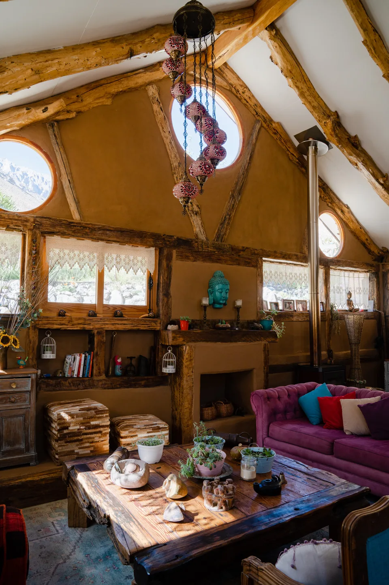

Wi-Fi
En Ajustes → Wi-Fi, elige LaCalma-Huespedes.
Clave de ejemplo · CieloDeElqui

Cochiguaz · Valle de Elqui · Guía de tu estadía
Guía de muestra · La red Wi-Fi, los equipos, los horarios y los teléfonos de actividades son ejemplos. Para tu reserva, utiliza las indicaciones del anfitrión.
En Ajustes → Wi-Fi, elige LaCalma-Huespedes.
Clave de ejemplo · CieloDeElqui
Usamos energía solar y eólica. Evita secadores de pelo durante la noche para cuidar las baterías.
Usa el agua con cuidado y avisa si detectas una fuga. Consulta al anfitrión las indicaciones de piscina y tinaja antes de utilizarlas.
Abastécete y carga combustible en Vicuña. En Cochiguaz hay minimarkets básicos y no hay cajeros.
Zorros y ratones cola de pincel forman parte del entorno. Obsérvalos sin alimentarlos.
Desde las 15:00 te reciben junto al estacionamiento para recorrer la casa y entregarte las llaves. Antes de las 12:00, apaga las luces y entrega las llaves en el lugar de recepción.
Consulta por experiencias de observación del cielo.
Teléfono de ejemplo · +56 9 XXXX 0201
Actividad con Pablo Cortés.
Teléfono de ejemplo · +56 9 XXXX 0202
Cicloturismo en el valle.
Teléfono de ejemplo · +56 9 XXXX 0203
Consulta por salidas con Don Tani o Nacho.
Teléfono de ejemplo · +56 9 XXXX 0204
Si necesitas ayuda con la casa o tu estadía, comunícate con Hogar Mágico.
Escribir por WhatsApp Llamar al anfitrión